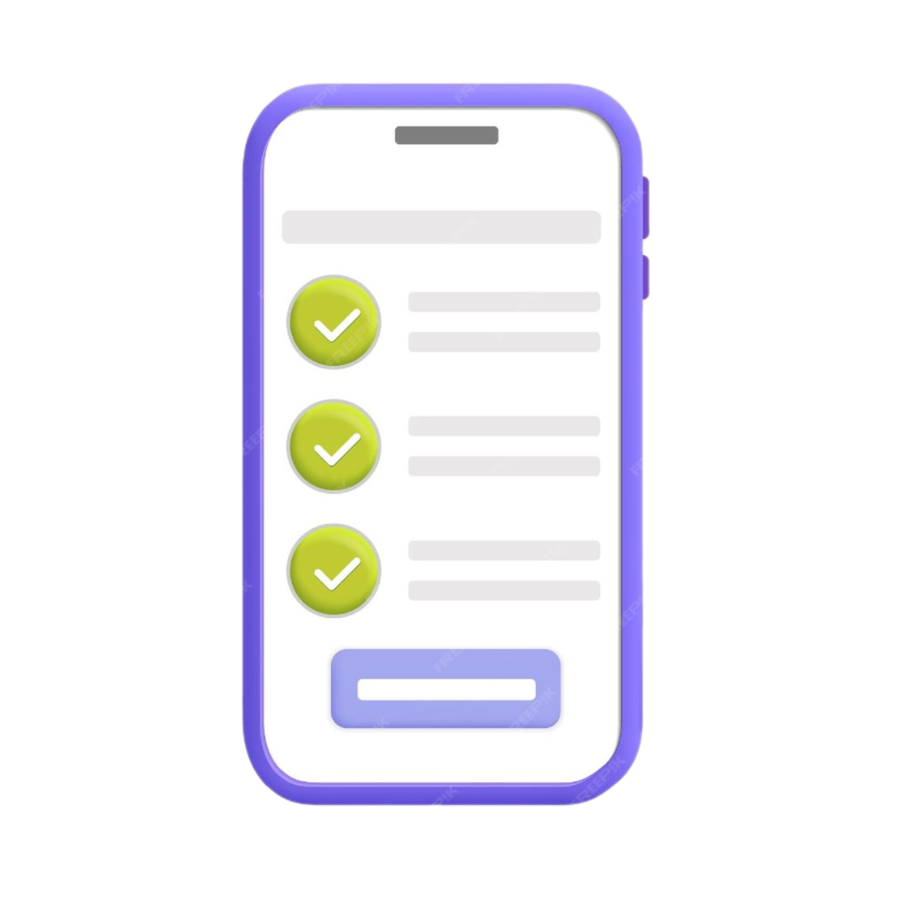

Task list
Task List é um site de lista de tarefas projetado para facilitar o seu dia. A Task List é 100% gratuita, e não é necessário criar uma conta. Basta entrar, organizar suas tarefas e pronto! Assim, você pode organizar seu dia de maneira rápida e fácil.
Seja no trabalho, nos estudos ou na vida cotidiana, a organização é a chave para o sucesso. Nosso site de lista de tarefas foi projetado para simplificar sua vida, proporcionando uma maneira fácil e eficaz de gerenciar suas responsabilidades diárias. Descubra os benefícios e vantagens de adotar nossa plataforma para otimizar sua produtividade.
Com uma interface intuitiva e fácil de usar, nosso site garante uma experiência de usuário sem complicações. Organize suas tarefas de forma rápida e eficiente, sem a necessidade de aprender complexos sistemas de gerenciamento.
Acesse suas listas de tarefas de qualquer lugar, a qualquer momento. Seja no seu computador, tablet ou smartphone, nosso site é compatível com diferentes dispositivos, permitindo que você mantenha o controle de suas atividades onde quer que esteja.